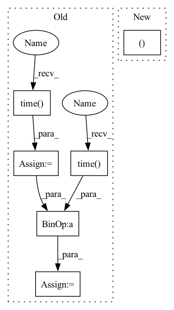

Pattern ID :34073

Before Change
output = self.stereo_methods_output[name]
tstart = time.time()
disparity = self.stereo_methods[name].compute_disparity (self.left_image, self.right_image)
show_color_disparity (name, disparity)
tend = time.time()
depth_meters = np.float32(self.calibration.baseline_meters * self.calibration.fx) / disparity
depth_meters = np.nan_to_num(depth_meters)
depth_meters = np.clip (depth_meters, -1.0, 10.0)
o3d_left = o3d.geometry.Image(self.left_image)
o3d_depth = o3d.geometry.Image(depth_meters)
rgbd = o3d.geometry.RGBDImage.create_from_color_and_depth(o3d_left,
o3d_depth,
1,
depth_trunc=10.0,
convert_rgb_to_intensity=False)
output.point_cloud = o3d.geometry.PointCloud.create_from_rgbd_image(rgbd, self.o3dCameraIntrinsic)
output.point_cloud.transform([[1,0,0,0],[0,-1,0,0],[0,0,-1,0],[0,0,0,1]])
self._scene.scene.remove_geometry(name)
self._scene.scene.add_geometry(name, output.point_cloud, rendering.MaterialRecord())
computation_time=(tend - tstart)
output.disparity_pixels = disparity
output.computation_time = computation_time
self._update_method_output (name)
After Change
output = self.stereo_methods_output[name]
disparity, computation_time = self.stereo_methods[name].compute_disparity (self.input.left_image, self.input.right_image)
show_color_disparity (name, disparity)
old_seterr = np.seterr(divide="ignore")
In pattern: SUPERPATTERN
Frequency: 5
Non-data size: 6
Instances
Fragment ID: 97439390
Project Name: nburrus/stereodemo
Commit Name: 00c5806dab0e79f8fcd353bc9a1d017b36874dd4
Time: 2022-05-17
Author: nicolas@burrus.name
File Name: stereodemo/visualizer.py
M Class Name: Visualizer
N Class Name: Visualizer
M Method Name: _run_current_method(1)
N Method Name: _run_current_method(1)
M Parent Class:
N Parent Class:
M File Name: stereodemo/visualizer.py
N File Name: stereodemo/visualizer.py
M Start Line: 245
M End Line: 273
N Start Line: 278
N End Line: 294
'>
Before Change
interrupted = False // timeout_handler.interrupted
if (do_periodic_eval or is_final_step or interrupted) and not self.args.disable_eval:
eval_start_time = time.time()
eval_loss = self.evaluation_step(val_itr)
logger.info(f"Eval loss: {eval_loss}")
// val_metrix = EvalMetrics(valid_file_stats.word_count, *node_metrix)
// log_str = "| Eval {:3d} at step {:>8d} | time: {:5.2f}s " \
// "| loss {:5.2f} | word ppl {:5.2f}".format(
// train_step // self.args.eval_interval,
// train_step,
// (time.time() - eval_start_time),
// val_metrix.avg_loss, val_metrix.word_ppl
// )
last_iter = train_itr.last_iter
// if self.args.qat:
// // Convert the model to a regular FP32 model for saving
// model_float = copy.deepcopy(self.model)
// model_float = qat_to_float_modules(model_float)
// model_to_save = model_float
// prefix = "qat_"
// save_checkpoint(args, model_to_save, model_config, optimizer, scheduler,
// scaler, vocab, epoch, batch, last_iter,
// train_step, best_val_loss, is_best,
// self.args.work_dir, prefix=prefix)
// dev-performance based learning rate annealing
// if self.args.scheduler == "dev_perf":
// self.scheduler.step(val_metrix.avg_loss)
// if self.scheduler_sparse:
// self.scheduler_sparse.step(val_metrix.avg_loss)
// subtract eval time from timers for training
log_start_time += time.time() - eval_start_time
if interrupted:
sys.exit(0)
After Change
interrupted = False // timeout_handler.interrupted
if (do_periodic_eval or is_final_step or interrupted) and not self.args.disable_eval:
eval_loss, eval_time = self.evaluation_step(eval_dataloader)
logger.info(
f"Eval: {train_step // self.args.eval_interval} | "
f"Step: {train_step} | Time: {eval_time:.2f}s | "
'>
Fragment ID: 97439389
Project Name: microsoft/archai
Commit Name: b3fee7d3fa9e9cff24c990ba725f2532e73766cb
Time: 2022-12-16
Author: gth.rosa@uol.com.br
File Name: archai/nlp/trainers/nvidia/trainer.py
M Class Name: NvidiaTrainer
N Class Name: NvidiaTrainer
M Method Name: training_step(7)
N Method Name: training_step(7)
M Parent Class:
N Parent Class:
M File Name: archai/nlp/trainers/nvidia/trainer.py
N File Name: archai/nlp/trainers/nvidia/trainer.py
M Start Line: 208
M End Line: 341
N Start Line: 235
N End Line: 372
'>
Before Change
output = self.stereo_methods_output[name]
tstart = time.time()
disparity = self.stereo_methods[name].compute_disparity (self.left_image, self.right_image)
show_color_disparity (name, disparity)
tend = time.time()
depth_meters = np.float32(self.calibration.baseline_meters * self.calibration.fx) / disparity
depth_meters = np.nan_to_num(depth_meters)
depth_meters = np.clip (depth_meters, -1.0, 10.0)
o3d_left = o3d.geometry.Image(self.left_image)
o3d_depth = o3d.geometry.Image(depth_meters)
rgbd = o3d.geometry.RGBDImage.create_from_color_and_depth(o3d_left,
o3d_depth,
1,
depth_trunc=10.0,
convert_rgb_to_intensity=False)
output.point_cloud = o3d.geometry.PointCloud.create_from_rgbd_image(rgbd, self.o3dCameraIntrinsic)
output.point_cloud.transform([[1,0,0,0],[0,-1,0,0],[0,0,-1,0],[0,0,0,1]])
self._scene.scene.remove_geometry(name)
self._scene.scene.add_geometry(name, output.point_cloud, rendering.MaterialRecord())
computation_time=(tend - tstart)
output.disparity_pixels = disparity
output.computation_time = computation_time
self._update_method_output (name)
After Change
output = self.stereo_methods_output[name]
disparity, computation_time = self.stereo_methods[name].compute_disparity (self.input.left_image, self.input.right_image)
show_color_disparity (name, disparity)
old_seterr = np.seterr(divide="ignore")
'>
Fragment ID: 97439386
Project Name: nburrus/stereodemo
Commit Name: 00c5806dab0e79f8fcd353bc9a1d017b36874dd4
Time: 2022-05-17
Author: nicolas@burrus.name
File Name: stereodemo/visualizer.py
M Class Name: Visualizer
N Class Name: Visualizer
M Method Name: _run_current_method(1)
N Method Name: _run_current_method(1)
M Parent Class:
N Parent Class:
M File Name: stereodemo/visualizer.py
N File Name: stereodemo/visualizer.py
M Start Line: 245
M End Line: 273
N Start Line: 278
N End Line: 294
'>
Before Change
def fit_ont_epoch(net,yolo_losses,epoch,epoch_size,epoch_size_val,gen,genval,Epoch,cuda,writer):
total_loss = 0
val_loss = 0
start_time = time.time()
with tqdm(total=epoch_size,desc=f"Epoch {epoch + 1}/{Epoch}",postfix=dict,mininterval=0.3) as pbar:
for iteration, batch in enumerate(gen):
if iteration >= epoch_size:
break
images, targets = batch[0], batch[1]
with torch.no_grad():
if cuda:
images = Variable(torch.from_numpy(images).type(torch.FloatTensor)).cuda()
targets = [Variable(torch.from_numpy(ann).type(torch.FloatTensor)) for ann in targets]
else:
images = Variable(torch.from_numpy(images).type(torch.FloatTensor))
targets = [Variable(torch.from_numpy(ann).type(torch.FloatTensor)) for ann in targets]
optimizer.zero_grad()
outputs = net(images)
losses = []
for i in range(3):
loss_item = yolo_losses[i](outputs[i], targets)
losses.append(loss_item[0])
loss = sum(losses)
loss.backward()
optimizer.step()
// 将loss写入tensorboard，每一步都写
writer.add_scalar("Train_loss", loss, (epoch*epoch_size + iteration))
total_loss += loss
waste_time = time.time() - start_time
pbar.set_postfix(**{"total_loss": total_loss.item() / (iteration + 1),
"lr" : get_lr(optimizer),
After Change
// 计算损失
//----------------------//
for i in range(3):
loss_item, num_pos = yolo_losses[i](outputs[i], targets)
losses.append(loss_item)
num_pos_all += num_pos
'>
Fragment ID: 97439384
Project Name: bubbliiiing/yolov4-pytorch
Commit Name: a60e3df58d34559fde5dcaebed532f3cc3a6611f
Time: 2021-01-13
Author: 47347516+bubbliiiing@users.noreply.github.com
File Name: train_with_tensorboard.py
M Class Name: AnonimousClass
N Class Name: AnonimousClass
M Method Name: fit_ont_epoch(10)
N Method Name: fit_ont_epoch(10)
M Parent Class:
N Parent Class:
M File Name: train_with_tensorboard.py
N File Name: train_with_tensorboard.py
M Start Line: 42
M End Line: 111
N Start Line: 42
N End Line: 129
'>
Before Change
best_val_loss=np.Inf, n_jobs=1, estimator_class=None, train_loss=False,
fit_kwargs={}
):
start_time = time.time()
estimator_class = estimator_class or get_estimator_class(
task, estimator_name)
estimator = estimator_class(
**config_dic, task=task, n_jobs=n_jobs)
val_loss, train_loss, train_time = evaluate_model(
estimator, X_train, y_train, X_val, y_val, weight_val, budget, kf, task,
eval_method, eval_metric, best_val_loss, train_loss=train_loss,
fit_kwargs=fit_kwargs)
all_time = time.time() - start_time
return estimator, val_loss, train_loss, train_time, all_time
After Change
estimator, X_train, y_train, X_val, y_val, weight_val, budget, kf, task,
eval_method, eval_metric, best_val_loss, train_loss=train_loss,
fit_kwargs=fit_kwargs)
return estimator, val_loss, train_loss, train_time, pred_time
def train_estimator(
'>
Fragment ID: 97439383
Project Name: microsoft/flaml
Commit Name: 072e9e458819324f9f9436c3febeb034e80e6f4f
Time: 2021-07-10
Author: wang.chi@microsoft.com
File Name: flaml/ml.py
M Class Name: AnonimousClass
N Class Name: AnonimousClass
M Method Name: compute_estimator(17)
N Method Name: compute_estimator(17)
M Parent Class:
N Parent Class:
M File Name: flaml/ml.py
N File Name: flaml/ml.py
M Start Line: 269
M End Line: 279
N Start Line: 287
N End Line: 293
'>
Before Change
def fit_one_epoch(net,yolo_losses,epoch,epoch_size,epoch_size_val,gen,genval,Epoch,cuda):
total_loss = 0
val_loss = 0
start_time = time.time()
with tqdm(total=epoch_size,desc=f"Epoch {epoch + 1}/{Epoch}",postfix=dict,mininterval=0.3) as pbar:
for iteration, batch in enumerate(gen):
if iteration >= epoch_size:
break
images, targets = batch[0], batch[1]
with torch.no_grad():
if cuda:
images = Variable(torch.from_numpy(images).type(torch.FloatTensor)).cuda()
targets = [Variable(torch.from_numpy(ann).type(torch.FloatTensor)) for ann in targets]
else:
images = Variable(torch.from_numpy(images).type(torch.FloatTensor))
targets = [Variable(torch.from_numpy(ann).type(torch.FloatTensor)) for ann in targets]
optimizer.zero_grad()
outputs = net(images)
losses = []
for i in range(3):
loss_item = yolo_losses[i](outputs[i], targets)
losses.append(loss_item[0])
loss = sum(losses)
loss.backward()
optimizer.step()
total_loss += loss
waste_time = time.time() - start_time
pbar.set_postfix(**{"total_loss": total_loss.item() / (iteration + 1),
"lr" : get_lr(optimizer),
After Change
losses = []
num_pos_all = 0
for i in range(3):
loss_item, num_pos = yolo_losses[i](outputs[i], targets_val)
losses.append(loss_item)
num_pos_all += num_pos
loss = sum(losses) / num_pos_all
'>
Fragment ID: 97439380
Project Name: bubbliiiing/yolov4-pytorch
Commit Name: a60e3df58d34559fde5dcaebed532f3cc3a6611f
Time: 2021-01-13
Author: 47347516+bubbliiiing@users.noreply.github.com
File Name: train.py
M Class Name: AnonimousClass
N Class Name: AnonimousClass
M Method Name: fit_one_epoch(9)
N Method Name: fit_one_epoch(9)
M Parent Class:
N Parent Class:
M File Name: train.py
N File Name: train.py
M Start Line: 41
M End Line: 100
N Start Line: 45
N End Line: 117